Redesigned Phuket Shooters’ multilingual, mobile-first website and booking journey, combining visual and interaction design with SEO and analytics to support measurable commercial growth. I contributed to substantial commercial growth, with company revenue increasing by more than 600% and approximately 15-25% attributed to the digital channel.
Visual Design - Interaction Design - Analytics (GA4, Metrika) - Responsive Design - Multilingual UX - Mobile First - Information Architecture -
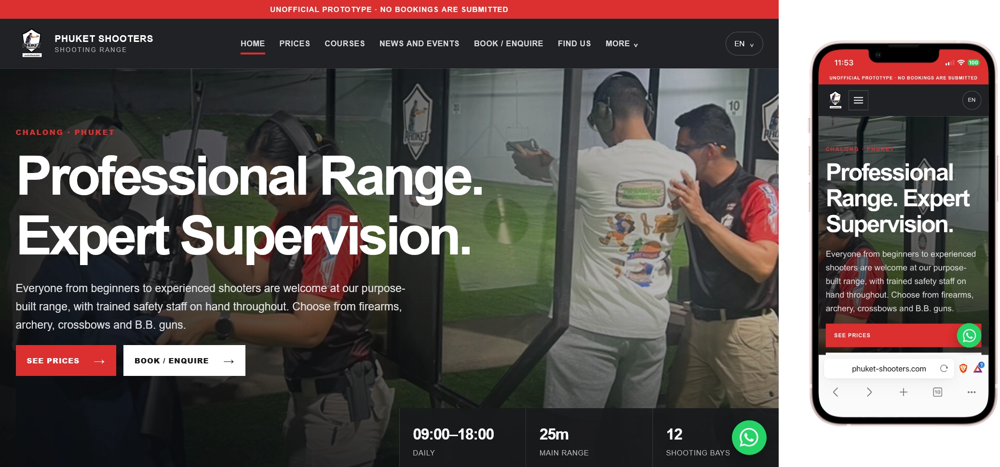
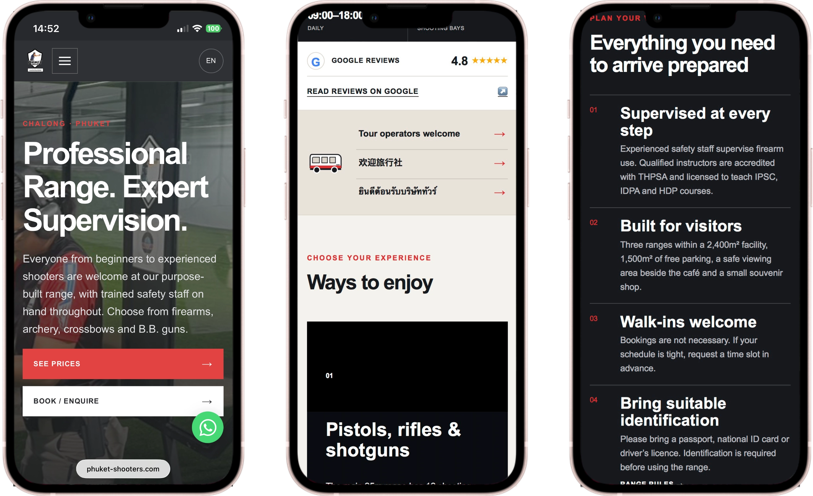
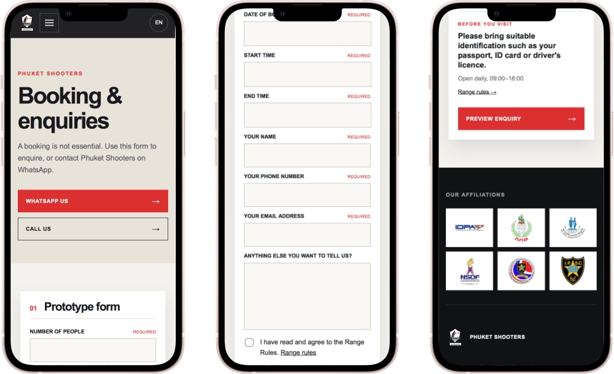
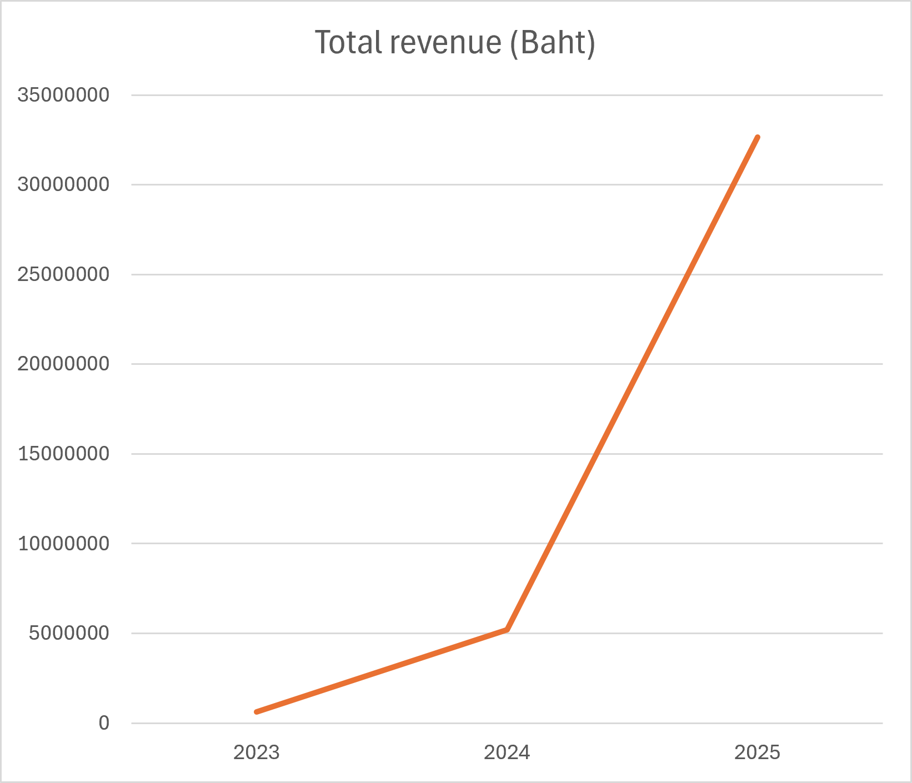
Two investors spotted a market gap for a shooting range in Phuket. This was to be a thoroughly professional affair with qualified ex-military or police instructors, close links with professional associations and formal training courses: Quality and safety were not negotiable.
Face-to-face business operations were operational but the investors needed a digital presence for generating local and international leads.
Enter me.
We knew from analytics that visitors were mostly tourists in Phuket looking for something to do and had good SEO but wanted to improve it.
The first step was to map out the user journey from need to discovery, then to quickly build confidence and trust in the range, allow them to explore options, to either make a booking or decide to turn up in person, and finally to figure out how to get there. Practical information was surfaced as soon as it became relevant to users' needs.
The home page was redesigned to provide prioritised information when relevant to users. The key proposition was in the hero panel along with fundamental mechanics (address, opening time, etc) followed by review scores to increase trust and credibility. Business research indicated that tour operators (particularly Chinese) were a growing market so I provided multilingual calls-to-action. Both reviews and tour operators used little vertical space to not deter regular consumers.
After this, the key proposition was expanded with a range of firearms and courses available, then information on being prepared to use the range. This dealt with the essential information a consumer would need so next were News and events, a gallery and the footer with affiliated organisations.
Calls-to-action to examine prices (a popular page according to analytics), book/enquire, get directions and to use Whatsapp to contact the range were dispersed at key user decision points along with an omnipresent Whatsapp button.
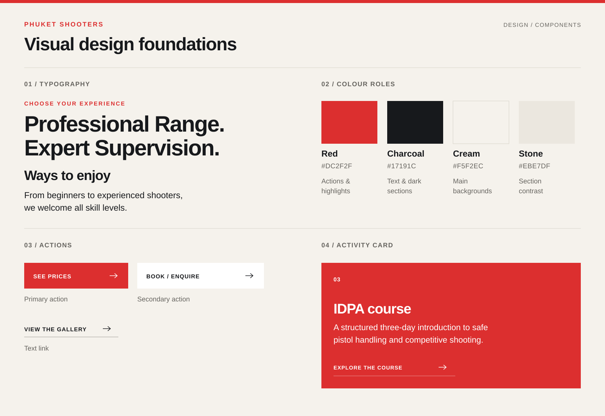
The redesign needed to feel more professional and consistent without becoming visually heavy. I introduced a restrained visual system based on strong photography, clear hierarchy, consistent spacing and a limited set of reusable interface patterns.
Key decisions included:
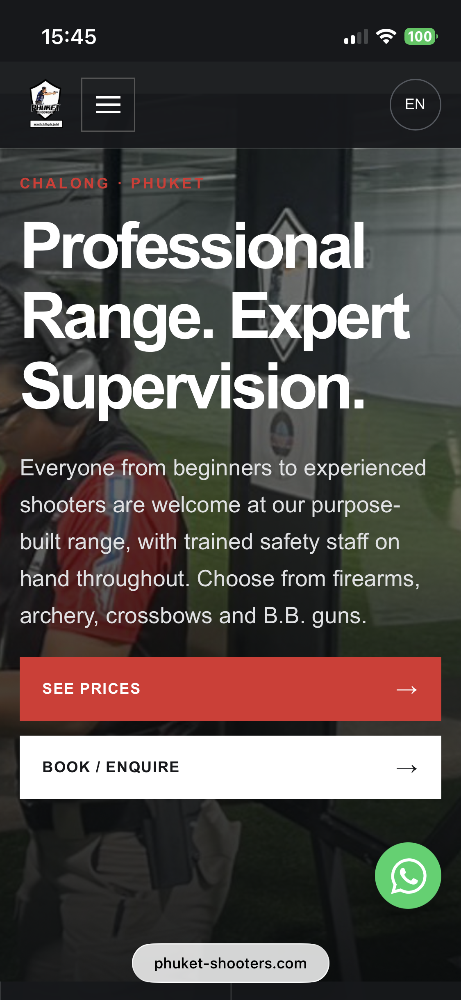
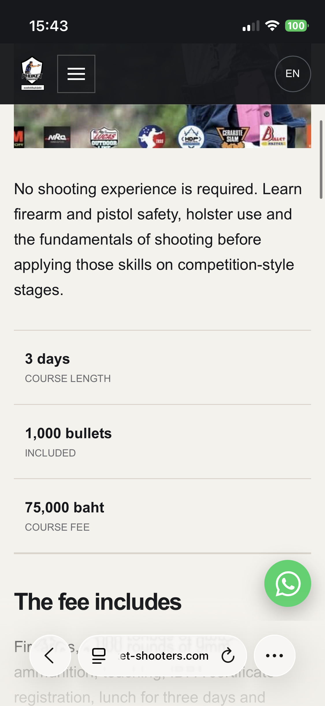
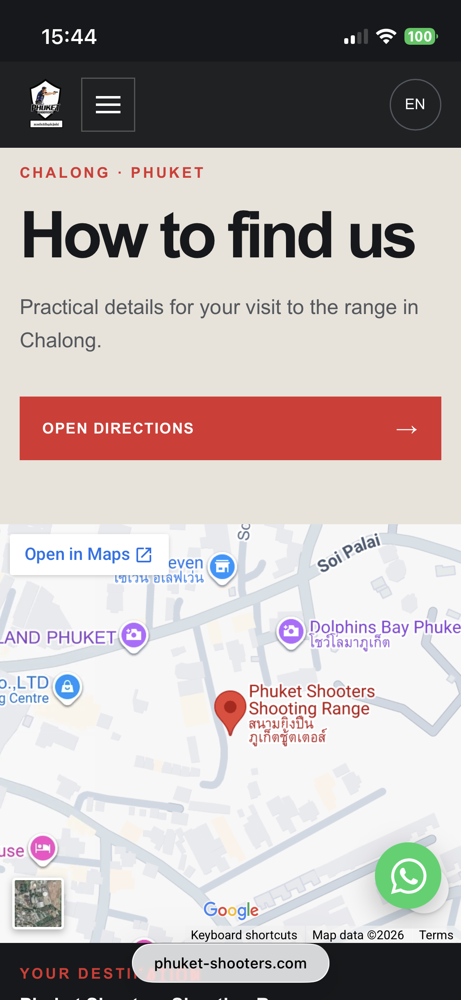
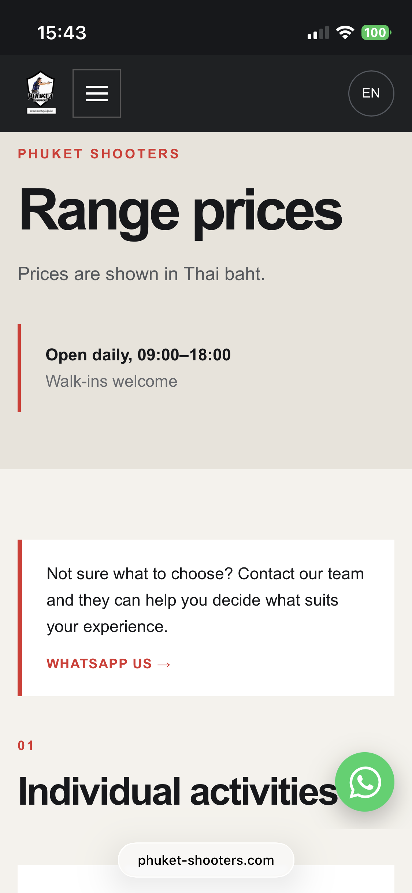
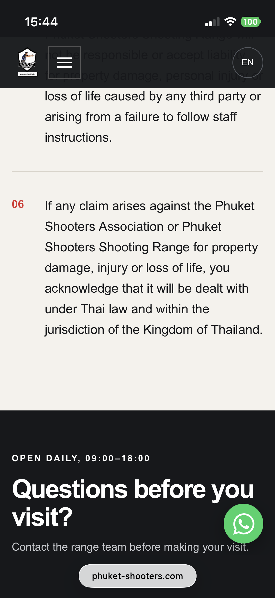
Phuket Shooters primarily serves individual tourists, but it can also accommodate organised coach groups arranged by tour operators. These two audiences have different needs: B2C visitors want prices, activities, reassurance and a simple booking route; tour operators care more about group capacity, coach access, parking, rest facilities and operational logistics.
Rather than making the homepage feel like a B2B site, I introduced a compact multilingual Tour operators welcome strip beneath the Google Reviews area. This gives English-, Chinese- and Thai-speaking operators a direct route to dedicated group information while keeping the main Ways to enjoy section focused on individual visitors.
This was deliberately a signpost rather than a large promotional section: enough prominence for a valuable secondary audience, without disrupting the dominant consumer journey.
Note: The linked tour-operator pages are currently prototype/demo content. Operational details such as confirmed coach capacity and parking claims need business-owner validation before publication.
Company revenue increased over 600% in a year with 15-25% attributed to digital on the original site. SEO ranking rose from unpositioned to often top-five across languages and search engines. I am engaged in a process of continuous improvement using analytics, some guerrilla testing, with ongoing SEO and competitor analysis.
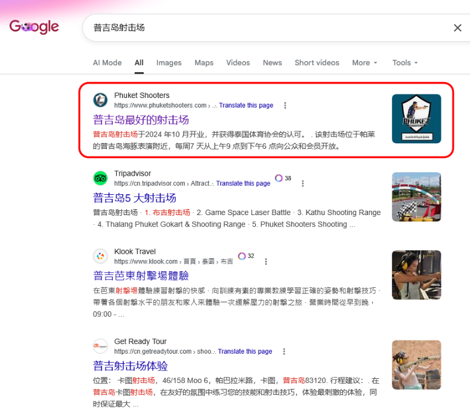
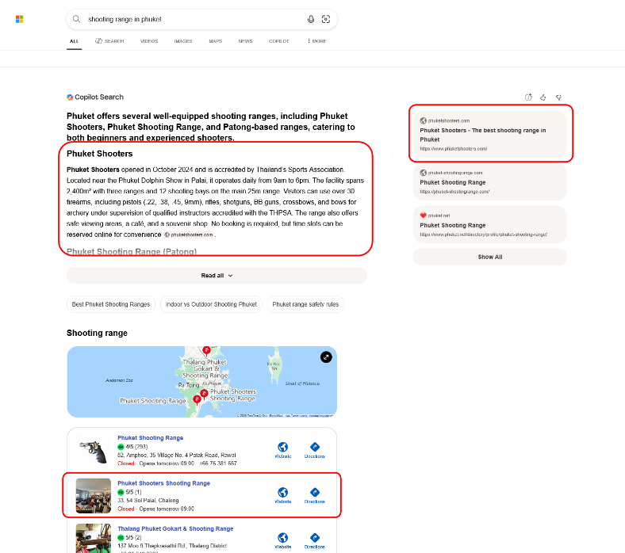